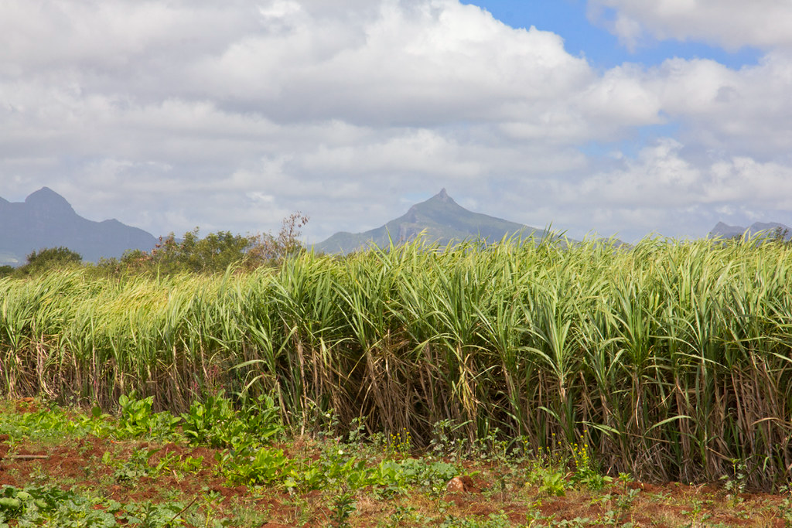

🌱 Sugarcane Crop Details 🌱
⬅ Back to Farm Map

|
Crop Information
|
| 🌾 Crop Name |
Sugarcane |
| 🌿 Variety |
Co 86032 |
| 📅 Sowing Date |
15 January 2026 |
| ⏳ Harvest Time |
12 Months |
| 🟤 Soil Type |
Black Soil |
| 💧 Water Requirement |
High |
| 🧪 Fertilizer |
NPK 19:19:19 |
| ✅ Crop Status |
Healthy |
| 📖 Additional Information |
|
Sugarcane requires regular irrigation and proper
soil management. Farmers should monitor soil
moisture, remove weeds regularly, and apply
balanced fertilizer for better yield and healthy
crop growth.
|
Smart Agriculture Project
|